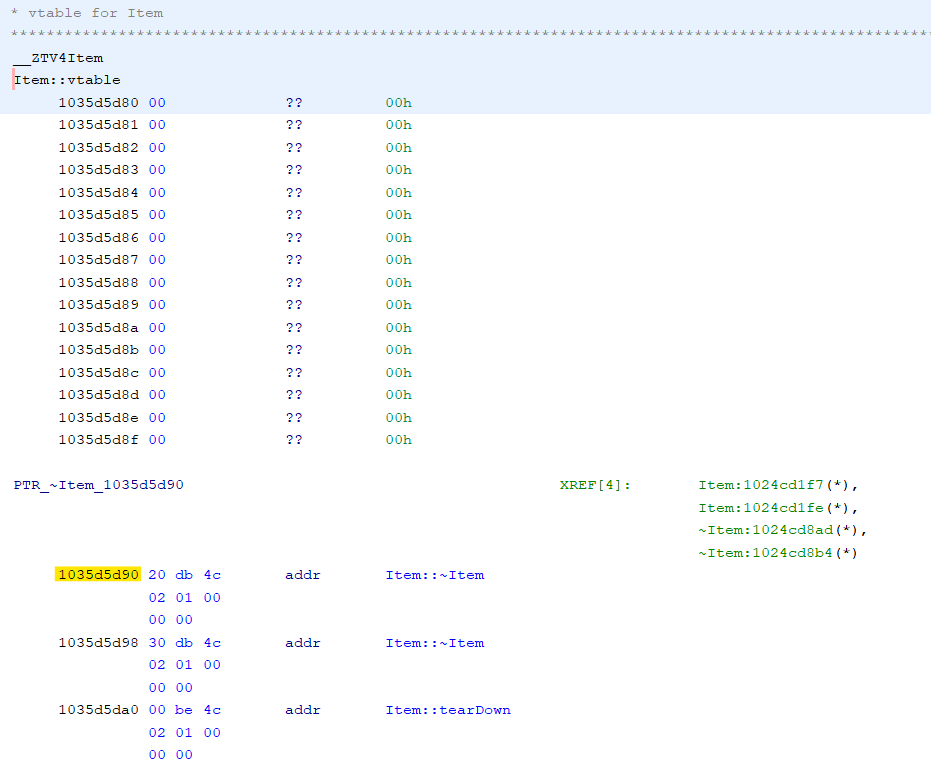

3.2 - Function Declarations
Extracting Vtable Order
-
To get started, locate the class you want to generate a header for inside of the
Mac Education Clientin theSymbolTreewindow and select thevtable.
-
Next locate the first function address in the Vtable, and copy it to a notepad file. The image below shows the first address highlighted in yellow (
1035d5d90)
-
Next locate the last function address in the Vtable by scrolling downwards and again copy it to a notepad file. The image below shows the last address highlighted in yellow (
1035d60b0)
- In the
ScriptManagerwindow in Ghidra, open theBedrockcategory and run the scriptExtractVtableOrder.py. Enter all details it prompts you for.
Generating C++ Header
- To get started open up your Ghidra Project for the
Windows Server. Next open theScriptManagerand runGenerateHeader.pyin theBedrockcategory.
- After the script has finished running it will output a
header fileand asymbol mapfor your class to%userprofile%/Desktop/HeaderOut.
Common Issues
-
Failed to find: '...'
This occurs when the script is unable to locate the same function from the dumped Vtable in the BDS, this is often because the script has failed to parse a type with generic types. To solve this issue manually complete these functions by hand.
-
Unknown pure virtual function
This occurs because the script is unable to work with pure virtual functions, to solve this issue manually complete these functions by hand.